here::here("code", "_common.R") |>
source()
# Load packages
if (!requireNamespace("pacman")) install.packages("pacman")
pacman::p_load(brms, posterior, cmdstanr, tidybayes)27 Zucchero sintattico
Introduzione
Nel capitolo precedente abbiamo visto come formulare e stimare un modello bayesiano di regressione lineare bivariata utilizzando distribuzioni a priori semplici. Questo esercizio ci ha permesso di cogliere l’essenza dell’approccio: i parametri della retta di regressione non sono valori fissi, ma quantità descritte da distribuzioni di probabilità aggiornate alla luce dei dati.
Tuttavia, la scrittura esplicita di ogni dettaglio del modello può diventare rapidamente ingombrante, soprattutto quando si lavora con più predittori o con modelli più complessi. Per rendere l’analisi più agevole, possiamo introdurre alcune notazioni e funzioni che alleggeriscono il codice senza modificarne il significato statistico.
In questo capitolo presenteremo quindi quello che potremmo chiamare “zucchero sintattico”: strumenti che rendono la specificazione dei modelli in R più compatta e leggibile, pur mantenendo intatta la logica bayesiana sottostante. Sarà un passaggio intermedio utile, che ci permetterà di concentrarci sugli aspetti concettuali della modellazione senza appesantirci con dettagli tecnici ripetitivi. Nei capitoli successivi, quando introdurremo Stan, vedremo come questa stessa esigenza di sintesi e chiarezza diventi ancora più cruciale.
Panoramica del capitolo
- Costruire e adattare modelli lineari con la funzione
brm(). - Interpretare i risultati e confrontarli con quelli ottenuti da un approccio frequentista.
- Visualizzare le relazioni stimate e distinguere tra intervalli di credibilità e di predizione.
- Specificare priors personalizzati e valutare l’impatto sui risultati.
- Eseguire verifiche predittive a posteriori (posterior predictive checks).
- Gestire la presenza di outlier tramite la regressione robusta.
- Calcolare e interpretare l’indice di determinazione bayesiano (Bayes R²).
- Accedere e manipolare la distribuzione a posteriori dei parametri.
27.1 Interfaccia brms
Come esempio, utilizzeremo un dataset che ci consente di stimare un modello lineare molto semplice. Il National Snow and Ice Data Center mette a disposizione numerosi dati pubblici, scaricabili ed esplorabili liberamente. Uno degli effetti più evidenti del cambiamento climatico riguarda la progressiva riduzione dell’estensione dei ghiacci marini nell’emisfero settentrionale. Qui analizzeremo come questa estensione è variata nel tempo.
La progressiva scomparsa di un elemento così iconico del nostro pianeta non è solo un dato fisico; agisce come un potente segnale psicologico. La percezione di perdite ambientali tangibili e su larga scala è un fattore chiave nel fenomeno dell’ansia climatica (climate anxiety), quella preoccupazione cronica e angoscia per gli impatti presenti e futuri del cambiamento climatico (Clayton, 2020).
Visualizzare un trend discendente così chiaro, come quello che emergerà dalla nostra analisi, fornisce un contesto cruciale. Non si tratta di un’astratta previsione futura, ma della documentazione di una trasformazione in atto che sta già alterando ecosistemi, economie e, non da ultimo, il nostro benessere psicologico collettivo (APA, 2017). L’analisi dei dati diventa così uno strumento per comprendere e comunicare una delle fonti dello stress ambientale contemporaneo.
I dati contenuti nel file N_08_extent_v4.0.csv riguardano le osservazioni del mese di agosto dal 1979 al 2024 e riportano i valori di extent. Con questo termine si indica la superficie marina totale in cui la concentrazione di ghiaccio è almeno del 15%. L’extent è considerato l’indicatore più robusto per monitorare le tendenze climatiche di lungo periodo, poiché risente meno delle fluttuazioni giornaliere dovute al vento (che può comprimere o disperdere il ghiaccio, modificandone la concentrazione ma non la sua estensione complessiva). Per questo motivo, quando si parla di “minimo storico dei ghiacci artici”, il riferimento è quasi sempre al valore di extent. La variabile extent è espressa in milioni di chilometri quadrati (ad esempio, 8.04 = 8.040.000 km²).
Carichiamo i dati e diamo un’occhiata alle prime righe:
df <- rio::import(here::here("data", "N_08_extent_v4.0.csv"))
df |>
head()
#> year mo source_dataset region extent area
#> 1 1979 8 NSIDC-0051 N 8.04 5.06
#> 2 1980 8 NSIDC-0051 N 7.98 4.94
#> 3 1981 8 NSIDC-0051 N 7.84 4.48
#> 4 1982 8 NSIDC-0051 N 8.14 5.00
#> 5 1983 8 NSIDC-0051 N 8.19 4.97
#> 6 1984 8 NSIDC-0051 N 7.77 4.68Visualizziamo ora la relazione tra extent e year con un diagramma a dispersione:
ggplot(df, aes(x = year, y = extent)) +
geom_point() +
labs(x = "Anno", y = "Estensione (milioni km²)") 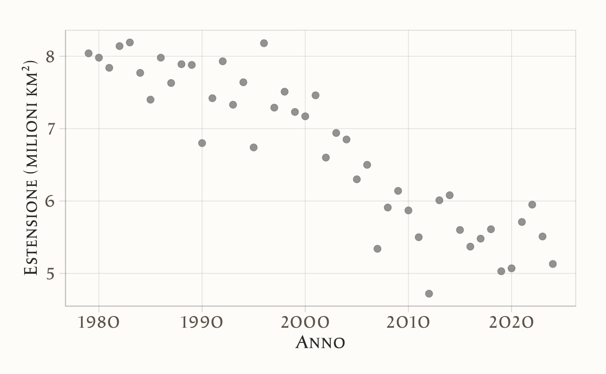
Il pacchetto brms si concentra sui modelli di regressione. Questa specializzazione consente di adottare una sintassi semplice e compatta, detta sintassi di Wilkinson (Wilkinson & Rogers, 1973).
Per esempio, il modello lineare
\[
y = \alpha + \beta x + \varepsilon
\] può essere scritto in brms nel modo seguente:
a_model <- brm(extent ∼ 1 + year, data = df)Nella sintassi di Wilkinson:
- il simbolo
~separa la variabile dipendente (a sinistra) dalle variabili indipendenti (a destra); -
1rappresenta l’intercetta, che in realtà è inclusa di default.
Quindi il modello precedente può essere scritto in maniera equivalente come:
a_model <- brm(extent ∼ year, data = df)Se desideriamo escludere l’intercetta dal modello, possiamo farlo così:
no_intercept_model <- brm(extent ∼ 0 + year, data = df)oppure:
no_intercept_model <- brm(extent ∼ -1 + year, data = df)Per aggiungere altre variabili indipendenti, basta estendere la formula:
model_2 <- brm(extent ∼ year + z, data = df)brms permette anche di stimare modelli gerarchici (a effetti misti). Ad esempio, se avessimo osservazioni raggruppate per area geografica g e volessimo stimare un effetto di year che varia da un gruppo all’altro, potremmo scrivere:
model_h <- brm(extent ∼ year + z + (year | g), data = df)È importante sottolineare che la sintassi di Wilkinson non specifica le distribuzioni a priori, ma soltanto come le variabili sono collegate tra loro. In assenza di istruzioni esplicite, brms assegna automaticamente delle prior debolmente informative, che permettono di stimare comunque il modello senza ulteriori interventi. Tuttavia, se desideriamo avere un controllo più preciso, possiamo definire manualmente le prior, come vedremo nelle sezioni successive.
27.1.1 Centrare le variabili
Per interpretare più facilmente l’intercetta, centriamo la variabile year rispetto alla sua media nel campione:
df$year_c <- df$year - mean(df$year)In questo modo, l’intercetta (\(\alpha\)) del modello rappresenterà l’estensione media prevista (extent, in milioni di km²) nell’anno medio del campione (cioè l’anno medio tra 1979 e 2024).
Adattiamo un modello lineare con year centrata ed esaminiamo i risultati:
fit_1 <- brm(
bf(extent ~ 1 + year_c, center = FALSE),
data = df,
backend = "cmdstanr",
silent = 0
)-
center = FALSEnel bf(…) assicura che brms non applichi un centraggio automatico ai predittori numerici: così evitiamo il “doppio centraggio”, dato che abbiamo già centratoyeara mano. -
backend = "cmdstanr"indica abrmsdi usare CmdStan tramite l’interfacciacmdstanr(anziché l’interfacciarstan). In questo corso useremocmdstanr, quindi è utile specificarlo esplicitamente. -
silent = 0lascia visibili alcuni messaggi informativi durante la compilazione e il campionamento (opzionale).
Le tracce MCMC dei parametri si ottengono così:
Riepilogo del modello:
summary(fit_1)
#> Family: gaussian
#> Links: mu = identity; sigma = identity
#> Formula: extent ~ 1 + year_c
#> Data: df (Number of observations: 46)
#> Draws: 4 chains, each with iter = 2000; warmup = 1000; thin = 1;
#> total post-warmup draws = 4000
#>
#> Regression Coefficients:
#> Estimate Est.Error l-95% CI u-95% CI Rhat Bulk_ESS Tail_ESS
#> Intercept 6.71 0.07 6.58 6.83 1.00 3383 2942
#> year_c -0.07 0.01 -0.08 -0.06 1.00 4432 2887
#>
#> Further Distributional Parameters:
#> Estimate Est.Error l-95% CI u-95% CI Rhat Bulk_ESS Tail_ESS
#> sigma 0.45 0.05 0.37 0.56 1.00 3341 2803
#>
#> Draws were sampled using sample(hmc). For each parameter, Bulk_ESS
#> and Tail_ESS are effective sample size measures, and Rhat is the potential
#> scale reduction factor on split chains (at convergence, Rhat = 1).27.1.1.1 Interpretazione
- L’intercetta \(\alpha\) =
b_Interceptè l’extent previsto (milioni di km²) nell’anno medio del campione (circa \(\text{mean(df\$year)}\)). - La pendenza \(\beta\) =
b_year_cquantifica la variazione media annua dell’extent: un valore negativo indica una diminuzione dell’estensione dei ghiacci nel tempo (trend atteso in questi dati).
Per confronto, stimiamo lo stesso modello con l’approccio frequentista:
fit_2 <- lm(extent ~ 1 + year_c, data = df)
summary(fit_2)
#>
#> Call:
#> lm(formula = extent ~ 1 + year_c, data = df)
#>
#> Residuals:
#> Min 1Q Median 3Q Max
#> -1.2394 -0.2755 0.0204 0.3081 1.0768
#>
#> Coefficients:
#> Estimate Std. Error t value Pr(>|t|)
#> (Intercept) 6.71000 0.06537 102.6 <2e-16
#> year_c -0.07148 0.00492 -14.5 <2e-16
#>
#> Residual standard error: 0.443 on 44 degrees of freedom
#> Multiple R-squared: 0.827, Adjusted R-squared: 0.823
#> F-statistic: 211 on 1 and 44 DF, p-value: <2e-16Con prior debolmente informativi, i risultati bayesiani e frequentisti tendono a essere molto simili (stesse quantità stimate, ma nel caso bayesiano abbiamo l’intera distribuzione a posteriori dei parametri, utile per inferenze e previsione).
27.1.2 Visualizzazione dei risultati
Per comprendere visivamente la relazione stimata tra anno ed estensione dei ghiacci artici nel nostro modello bayesiano, possiamo utilizzare la funzione conditional_effects:
conditional_effects(fit_1, effects = "year_c")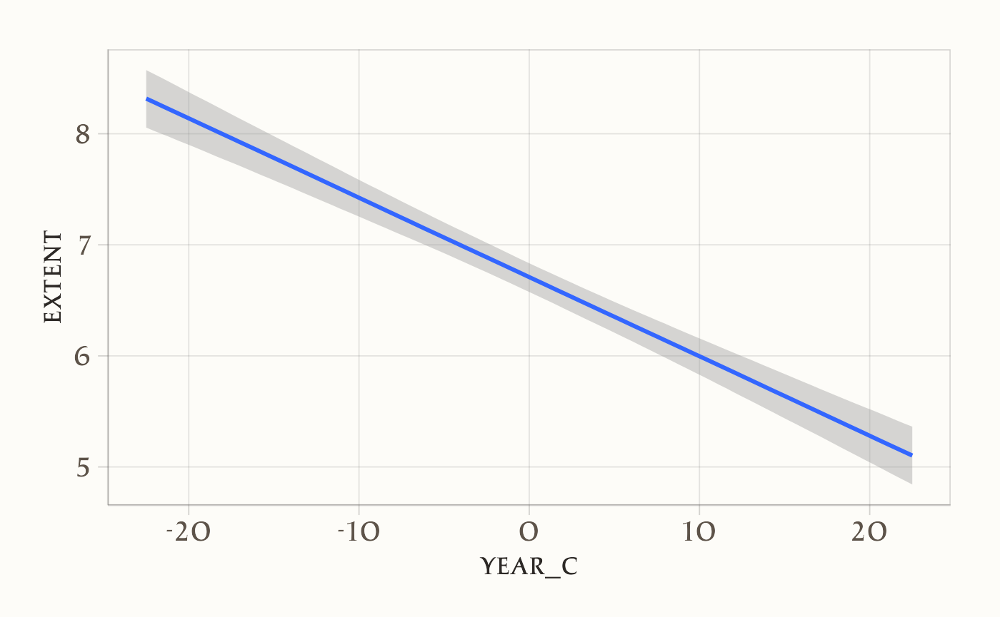
Il grafico generato fornisce una rappresentazione intuitiva della stima:
-
Linea centrale (media posteriore): rappresenta il valore medio previsto di extent per ciascun valore di
year_c. - Area colorata (intervallo di credibilità): mostra l’intervallo di credibilità al 95% (Highest Density Interval, HDI), cioè l’intervallo in cui cade il 95% della distribuzione a posteriori delle previsioni.
Possiamo modificare il livello di incertezza visualizzato regolando l’argomento prob:
# Visualizzazione con intervallo di credibilità all'89%
conditional_effects(fit_1, effects = "year_c", prob = 0.89)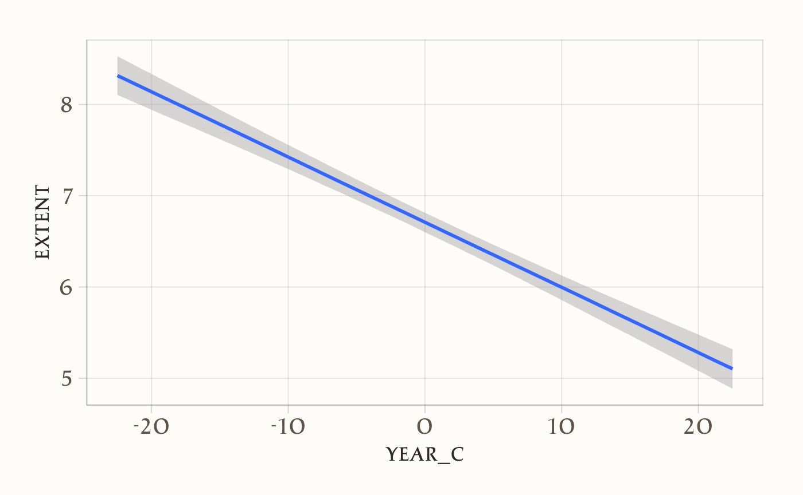
- Riducendo
prob(ad esempio a 0.80 o 0.50) otteniamo intervalli più stretti, che mostrano solo la parte più densa della distribuzione posteriore. - Aumentando
prob(ad esempio a 0.99) otteniamo intervalli più ampi, che riflettono una maggiore incertezza.
27.1.2.1 Interpretazione pratica del grafico
Nel grafico:
- il punto in cui la linea attraversa
year_c = 0corrisponde all’estensione prevista dei ghiacci nell’anno medio del campione (circa il 2001, dato che abbiamo centrato la variabileyear); - la pendenza della linea indica la variazione media di estensione dei ghiacci (in milioni di km²) per ogni anno in più: un valore negativo segnala una riduzione progressiva;
- la larghezza dell’intervallo di credibilità riflette il grado di incertezza delle stime: intervalli più stretti indicano maggiore precisione, intervalli più larghi indicano più incertezza.
27.2 Due tipi di incertezza nei modelli bayesiani
Immaginiamo di voler capire come l’anno (X) sia collegato all’estensione dei ghiacci artici (Y). Con un modello bayesiano otteniamo due tipi distinti di incertezza, che corrispondono a due domande diverse:
| Che cosa stiamo stimando? | Come si chiama l’incertezza? | Che intervallo disegniamo? |
|---|---|---|
| La media “vera” dell’estensione dei ghiacci per un dato anno | Incertezza del parametro (o dell’effetto medio) | Intervallo di credibilità (credible interval) |
| Il valore futuro di una nuova osservazione (quale sarà l’estensione dei ghiacci in un singolo anno come quello) | Incertezza predittiva | Intervallo di predizione (prediction interval) |
27.2.1 Incertezza del parametro – «Quanto stiamo sbagliando la linea media?»
conditional_effects(fit_1, effects = "year_c")Disegna la linea di regressione (la media stimata dell’estensione per ogni anno centrato).
Aggiunge intorno una fascia stretta: l’intervallo di credibilità al 95%.
Come leggerla: Se la fascia, per l’anno medio del campione, va ad esempio da 7.5 a 7.7 milioni di km², significa che “con il 95% di probabilità la vera media dell’estensione in quell’anno sta lì dentro”. Non dice nulla sulle singole osservazioni, che possono discostarsi anche molto dalla media.
Metafora veloce. Pensa a tirare freccette: la media cade vicino al centro, ma ogni singola freccia può atterrare in punti diversi. L’intervallo di credibilità descrive solo dove cade il centro.
27.2.2 Incertezza predittiva – «Quanto potrebbe variare la prossima osservazione?»
conditional_effects(fit_1, effects = "year_c", method = "predict")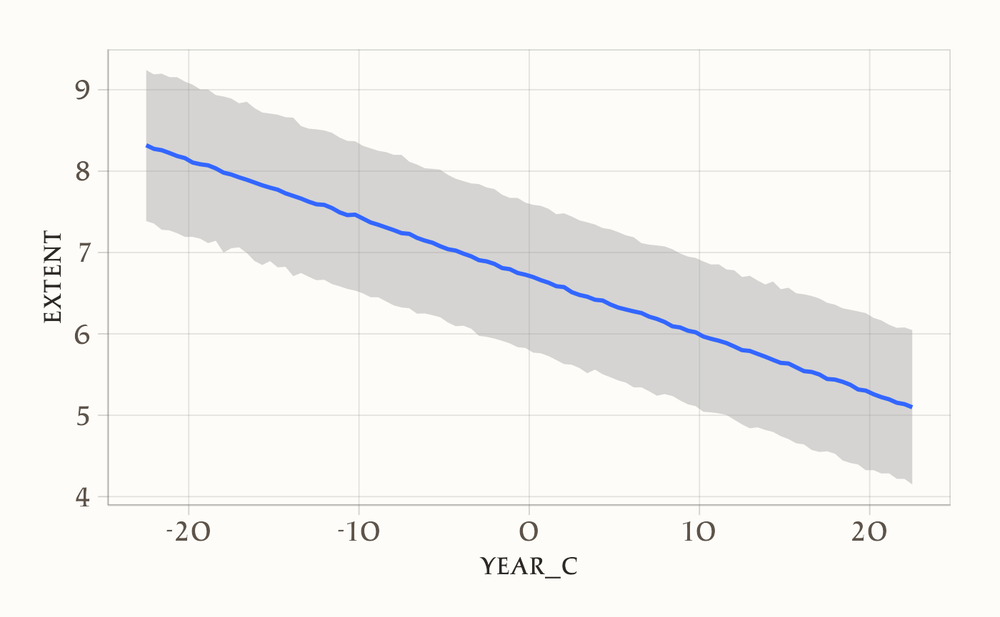
- Ripropone la stessa linea media.
- Disegna però una fascia molto più larga: l’intervallo di predizione.
L’intervallo predittivo include due fonti di variabilità:
- Incertezza sulla linea media (come sopra).
- Variabilità residua: le differenze naturali tra osservazioni nello stesso anno (fluttuazioni dovute a vento, condizioni meteorologiche, ecc.).
Metafora veloce. Ora guardi non solo il centro del bersaglio, ma l’intero disco dove ogni freccia potrebbe cadere. L’area è molto più grande.
27.2.3 Quando usare l’una o l’altra fascia?
| Obiettivo della tua domanda | Funzione da usare | Quale fascia guardare |
|---|---|---|
| Capire l’effetto medio (es. “quanto si riduce in media l’estensione ogni anno?”) | conditional_effects(...) |
Intervallo di credibilità |
| Fare previsioni su un caso futuro (es. “quale sarà l’estensione osservata nell’agosto 2025?”) | conditional_effects(..., method = "predict") |
Intervallo di predizione |
27.2.3.1 In sintesi
- Credibilità = incertezza sul parametro medio → fascia stretta (stima della retta).
- Predizione = incertezza su osservazioni future → fascia larga (linea + variabilità residua).
- La scelta dipende dalla domanda: “qual è la media?” (credibilità) oppure “dove cadrà il prossimo dato?” (predizione).
In breve, la visualizzazione predittiva è più onesta quando vogliamo fare previsioni concrete su nuove osservazioni, mentre quella con l’intervallo di credibilità è più utile per capire la relazione generale tra anno ed estensione dei ghiacci.
27.3 Distribuzione a posteriori dei parametri
Per esaminare la distribuzione a posteriori dei parametri del modello, possiamo utilizzare la funzione mcmc_plot():
mcmc_plot(fit_1, type = "dens")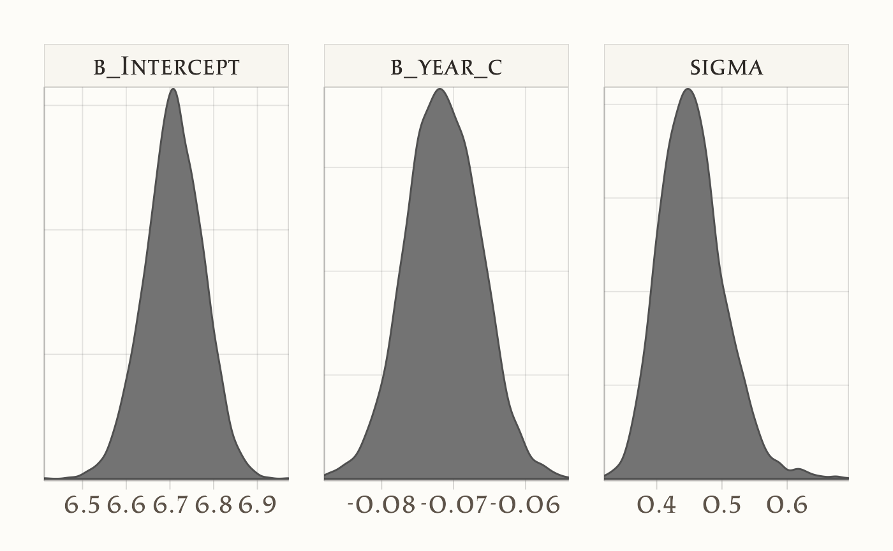
Questa funzione disegna la densità a posteriori dei parametri, mostrando graficamente quali valori sono più plausibili dato il modello, i dati e le scelte a priori.
Per un’analisi numerica più dettagliata, trasformiamo l’oggetto fit_1 in un formato compatibile con il pacchetto posterior e poi calcoliamo le statistiche di sintesi:
draws <- posterior::as_draws(fit_1, variable = "^b_", regex = TRUE)
posterior::summarise_draws(draws, "mean", "sd", "mcse_mean", "mcse_sd")
#> # A tibble: 2 × 5
#> variable mean sd mcse_mean mcse_sd
#> <chr> <dbl> <dbl> <dbl> <dbl>
#> 1 b_Intercept 6.709 0.066 0.001 0.001
#> 2 b_year_c -0.071 0.005 0.000 0.000- La funzione
as_draws()converte l’oggetto in una struttura che rappresenta i campioni MCMC. - Gli argomenti
variable = "^b_"eregex = TRUEselezionano solo i parametri che iniziano conb_, cioè i coefficienti del modello: l’intercetta e la pendenza. - La funzione
summarise_draws()calcola statistiche riassuntive per la distribuzione a posteriori di questi parametri.
27.3.1 Spiegazione di mcse_mean e mcse_sd
Oltre a media (mean) e deviazione standard (sd), summarise_draws() riporta anche due indici utili:
-
mcse_mean= Monte Carlo Standard Error della media.- Indica quanto la stima della media potrebbe variare semplicemente perché abbiamo un numero finito di campioni MCMC.
- Se è molto piccolo rispetto a
sd, possiamo fidarci che la media stimata rappresenta bene la distribuzione a posteriori.
-
mcse_sd= Monte Carlo Standard Error della deviazione standard.- Indica quanto la stima della deviazione standard della distribuzione a posteriori potrebbe variare per lo stesso motivo.
- Anche qui, un valore molto piccolo rispetto alla
sdè segno che il campionamento è stato sufficiente.
27.3.2 Come interpretarli in pratica?
-
Rapporto rispetto a
sd-
mcse_meanemcse_sddovrebbero essere almeno un ordine di grandezza più piccoli delle corrispondenti stime (meanesd). - Ad esempio: se per
b_Interceptabbiamomcse_mean = 0.0044esd = 0.2695, il valore è più di 60 volte più piccolo → la stima è robusta.
-
-
Qualità del campionamento
-
Se
mcse_meanomcse_sdfossero troppo grandi, questo indicherebbe che:- il numero di iterazioni MCMC è insufficiente,
- le catene non hanno mescolato bene,
- o ci sono problemi di convergenza.
-
27.3.2.1 In sintesi
-
mcse_meanemcse_sdnon descrivono l’incertezza statistica sui dati, ma la qualità del campionamento Monte Carlo. - Se sono piccoli, significa che il numero di campioni è sufficiente e la distribuzione a posteriori è rappresentata in modo accurato.
- In altre parole: ci dicono se possiamo fidarci che la “fotografia” ottenuta con l’MCMC rispecchi bene la vera distribuzione a posteriori.
27.4 Specificare i priors
Nei modelli bayesiani i priors rappresentano le nostre aspettative sui parametri prima di osservare i dati. Se non li specifichiamo, brms assegna dei prior debolmente informativi di default.
Possiamo ispezionarli con la funzione get_prior:
get_prior(extent ~ 1 + year_c, data = df)
#> prior class coef group resp dpar nlpar lb ub
#> student_t(3, 6.8, 2.5) Intercept
#> (flat) b
#> (flat) b year_c
#> student_t(3, 0, 2.5) sigma 0
#> source
#> default
#> default
#> (vectorized)
#> defaultL’output mostra quali prior vengono assegnati a ciascun parametro del modello. Per esempio:
-
prior– indica il prior utilizzato.-
student_t(3, 6.8, 2.5): prior t di Student per l’intercetta, con 3 gradi di libertà, media 6.8 e scala 2.5. -
(flat): prior piatto (non informativo) per i coefficienti delle variabili predittive, come il coefficiente diyear_c. -
student_t(3, 0, 2.5): prior t di Student per la deviazione standard residua (\(\sigma\)), centrato su 0 con scala 2.5.
-
-
class– indica a quale tipo di parametro il prior si riferisce:-
Intercept: prior sull’intercetta (\(\alpha\)); -
b: prior sui coefficienti dei predittori (\(\beta\)); -
sigma: prior sulla deviazione standard residua (\(\sigma\)).
-
-
coef– specifica a quale predittore si riferisce il prior.- Vuoto per l’intercetta (perché non dipende da un predittore specifico).
-
year_cper il coefficiente associato al predittoreyear_c.
-
lbeub– rappresentano i limiti inferiore (lower bound) e superiore (upper bound) del prior, se esistono.- Per
sigma, il limite inferiore è 0, poiché una deviazione standard non può essere negativa.
- Per
source– indica se il prior è stato impostato dall’utente o se è il valore predefinito (default).
27.4.1 Specificare priors manualmente
Se vogliamo rendere esplicite le nostre ipotesi, possiamo definire dei priors diversi da quelli di default. Ad esempio:
Nota: usiamo
brms::prior()per essere sicuri di richiamare la funzione del pacchettobrmsed evitare conflitti con funzioni omonime di altri pacchetti.
Adattiamo ora il modello con i priors specificati:
fit_2 <- brm(
bf(extent ~ 1 + year_c, center = FALSE),
prior = prior_gaussian,
data = df,
backend = "cmdstanr",
silent = 0
)E otteniamo un sommario numerico delle distribuzioni a posteriori:
draws <- posterior::as_draws(fit_2, variable = "^b_", regex = TRUE)
posterior::summarise_draws(draws, "mean", "sd", "mcse_mean", "mcse_sd")
#> # A tibble: 2 × 5
#> variable mean sd mcse_mean mcse_sd
#> <chr> <dbl> <dbl> <dbl> <dbl>
#> 1 b_Intercept 6.711 0.068 0.001 0.001
#> 2 b_year_c -0.072 0.005 0.000 0.00027.4.2 Confronto con i priors di default
Nel nostro caso, i priors esplicitamente definiti non cambiano in modo rilevante le distribuzioni a posteriori. Questo accade perché i dati disponibili sono numerosi e forniscono già informazioni molto forti: in pratica, le osservazioni “dominano” sulle ipotesi iniziali.
Dal punto di vista didattico è un aspetto cruciale da sottolineare:
- Con molti dati e alta informatività, i priors hanno un ruolo marginale: le stime finali saranno simili indipendentemente dalle ipotesi iniziali.
- Con pochi dati o dati molto rumorosi, invece, i priors diventano determinanti: le scelte iniziali possono influenzare in maniera sostanziale i risultati finali.
In altre parole, la forza relativa tra dati e priors dipende dalla quantità e dalla qualità dell’informazione empirica disponibile.
27.5 Predizioni a posteriori (Posterior Predictive Checks)
Un aspetto fondamentale nella valutazione di un modello statistico, sia frequentista che bayesiano, è verificare quanto bene le predizioni del modello rappresentino i dati osservati. La logica di fondo è simile nei due paradigmi, ma l’approccio e l’interpretazione sono diversi.
27.5.1 Confronto frequentista
Nel caso frequentista, il confronto si basa sui valori stimati dal modello:
\[ \hat{y} = \hat{\alpha} + \hat{\beta}x \]
Si analizzano principalmente:
- la vicinanza della retta di regressione ai dati osservati;
- la presenza di eventuali pattern non lineari nei residui;
- la variazione della dispersione di \(y\) rispetto a \(x\) (per verificare l’ipotesi di omoschedasticità).
27.5.2 Approccio bayesiano
Nell’approccio bayesiano eseguiamo le stesse verifiche di base, ma disponiamo di uno strumento in più: le Predizioni a Posteriori (Posterior Predictive Checks, PPCs).
L’idea è semplice ma potente:
- invece di confrontare i dati osservati solo con una linea di regressione “fissa”,
- li confrontiamo con dati simulati dal modello, generati utilizzando i campioni dalle distribuzioni a posteriori dei parametri.
In questo modo, nelle predizioni è incorporata anche l’incertezza sui parametri stimata dal modello.
27.5.3 Come si costruiscono le predizioni a posteriori
Nel caso di un modello lineare semplice, il procedimento è:
Dati osservati: partiamo dalla distribuzione empirica della variabile risposta (\(y\)).
Estrazione dei parametri: prendiamo un campione casuale \(\alpha'\), \(\beta'\), \(\sigma'\) dalle distribuzioni a posteriori dei parametri.
-
Simulazione dei dati: generiamo valori simulati da una normale:
\[ y_{\text{sim}} \sim \mathcal{N}(\alpha' + \beta' x, \sigma') \]
dove \(x\) sono i predittori osservati.
Ripetizione: il processo viene ripetuto molte volte, producendo numerosi dataset simulati.
Confronto: i dati simulati vengono confrontati con i dati reali (istogrammi, densità o residui).
27.5.4 Interpretazione
- Buona corrispondenza: se la distribuzione dei dati simulati si sovrappone bene a quella osservata, il modello rappresenta adeguatamente i dati.
- Discrepanze: differenze sistematiche (picchi mancanti, code sottostimate, ecc.) indicano che il modello non cattura tutti gli aspetti dei dati.
Il vantaggio dei PPC è che:
- integrano l’incertezza sui parametri;
- permettono di valutare non solo la bontà di adattamento media, ma anche dettagli della distribuzione;
- sono molto intuitivi e visivi, facilitando la diagnosi di problemi.
27.5.4.1 Esempi con R
Verifichiamo le predizioni del modello confrontandole con i dati osservati:
pp_check(fit_2)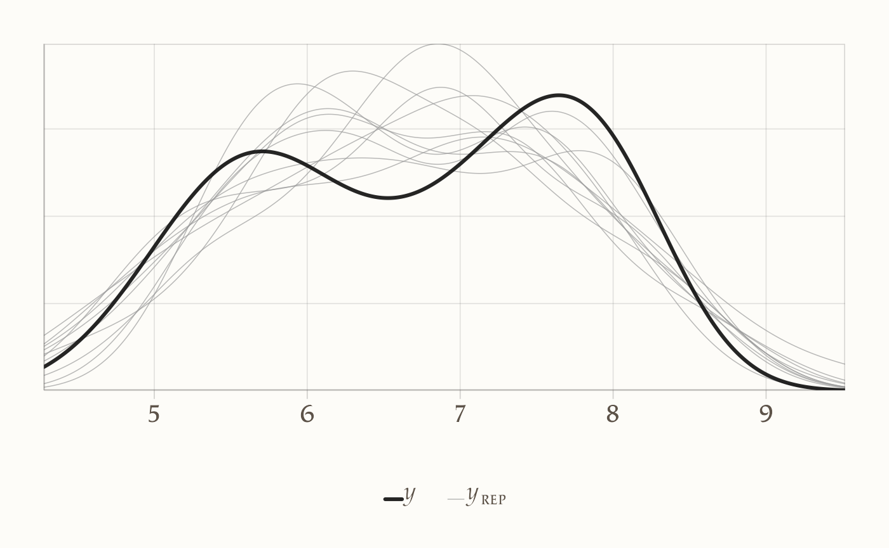
In questo caso, il grafico mostra una buona corrispondenza tra i dati simulati e quelli reali.
Possiamo poi analizzare i residui bayesiani con un grafico più specifico:
pp_check(fit_1, type = "error_scatter_avg")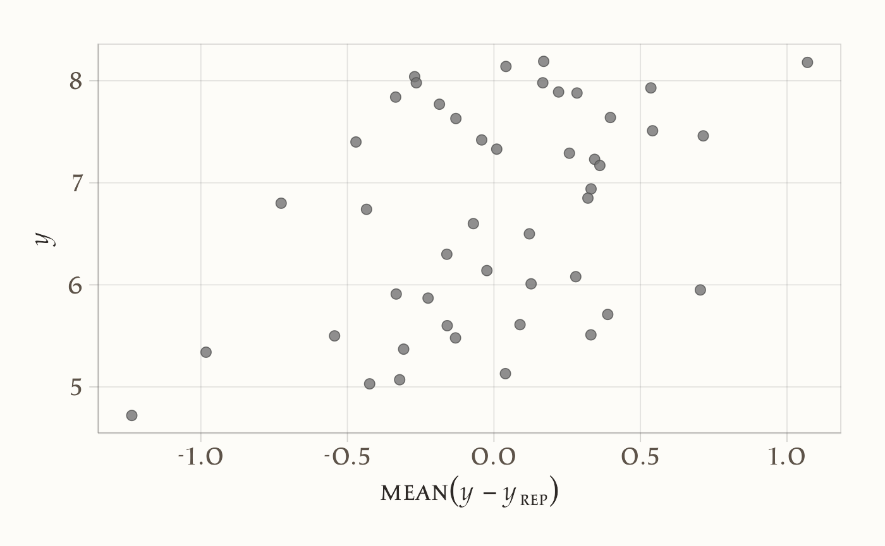
Questo grafico rappresenta i residui (differenze tra osservato e predetto) rispetto ai valori predetti:
- se i residui appaiono distribuiti in modo uniforme, il modello descrive correttamente la relazione;
- se emergono pattern sistematici (ad esempio curvature o variazioni di dispersione), il modello potrebbe essere inadeguato.
27.5.5 Commento sui residui
Nel grafico dei residui (\(y\) in funzione di \(y - y_{\text{rep}}\)) si osserva un trend crescente: i residui non sono distribuiti in modo uniforme, ma mostrano una struttura sistematica. Questo pattern indica che il modello lineare bivariato non cattura pienamente le proprietà dei dati. In particolare, trattandosi di una serie temporale, è probabile che vi siano dipendenze tra osservazioni successive nel tempo: l’estensione dei ghiacci in un anno dipende anche dai valori degli anni immediatamente precedenti. Il modello lineare semplice, invece, assume che gli errori siano indipendenti e identicamente distribuiti, e non è quindi in grado di rappresentare questa dinamica temporale.
Questo esempio è didatticamente importante perché mostra che:
- anche un modello molto semplice può aiutare a evidenziare strutture nascoste nei dati (qui la dipendenza temporale);
- tuttavia, se compaiono incongruenze nei residui, significa che il modello non è adeguato e va migliorato o reso più complesso (ad esempio con modelli di regressione per serie temporali o modelli gerarchici dinamici).
La verifica dei residui è dunque un passaggio cruciale: non solo permette di valutare l’adattamento del modello, ma può suggerire nuove direzioni di modellizzazione per rappresentare meglio la complessità del fenomeno.
27.5.5.1 In sintesi
Le Predizioni a Posteriori forniscono un modo robusto per valutare l’adeguatezza di un modello bayesiano:
- se i dati simulati somigliano ai dati reali, il modello è plausibile per il campione analizzato;
- in caso contrario, è opportuno rivedere la struttura del modello (es. includendo effetti non lineari, variabili aggiuntive o priors più adeguati).
Il PPC è una “prova del nove” del modello, che traduce la teoria in un confronto diretto e visivo con i dati osservati.
27.6 Regressione robusta
In questa sezione introduciamo la regressione robusta. L’obiettivo è mostrare quanto sia semplice modificare, in brm(), la distribuzione degli errori per rendere il modello meno sensibile agli outlier.
Questa flessibilità è un punto di forza dell’approccio bayesiano: nei modelli frequentisti standard, la distribuzione degli errori è quasi sempre fissata a priori (ad esempio normale/gaussiana) e non può essere facilmente modificata.
27.6.1 Perché servono modelli robusti?
Gli outlier — valori molto distanti dal resto delle osservazioni — possono influenzare in modo marcato le stime di regressione. Ad esempio, aggiungiamo artificialmente un outlier nel dataset:
df_outlier <- df
df_outlier$extent[1] <- 20 # valore anomalo molto alto
df_outlier$year_c[1] <- -25 # anno centrato "estremo"Visualizziamo i dati:
df_outlier |>
ggplot(aes(x = year_c, y = extent)) +
geom_point() +
labs(x = "Anno centrato", y = "Estensione (milioni km²)") 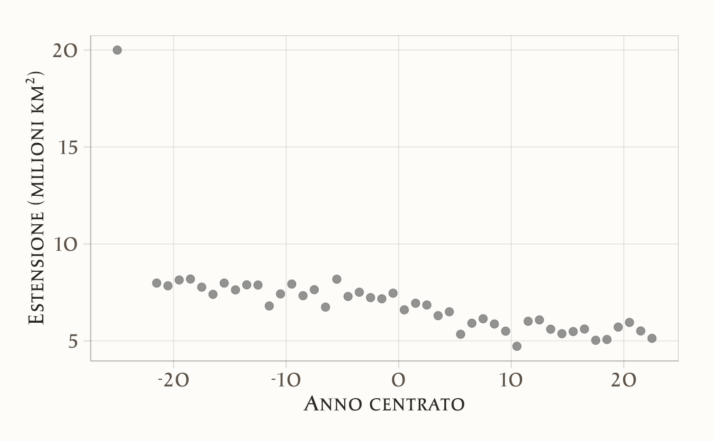
27.6.2 Effetto dell’outlier su un modello gaussiano
Stimiamo un modello lineare gaussiano:
fit_3 <- brm(
bf(extent ~ 1 + year_c, center = FALSE),
prior = prior_gaussian,
data = df_outlier,
backend = "cmdstanr",
silent = 0
)Esaminiamo i parametri stimati:
draws <- posterior::as_draws(fit_3, variable = "^b_", regex = TRUE)
posterior::summarise_draws(draws, "mean", "sd", "mcse_mean", "mcse_sd")
#> # A tibble: 2 × 5
#> variable mean sd mcse_mean mcse_sd
#> <chr> <dbl> <dbl> <dbl> <dbl>
#> 1 b_Intercept 6.961 0.252 0.004 0.004
#> 2 b_year_c -0.107 0.019 0.000 0.000Rispetto al modello stimato senza outlier (dove la pendenza \(\beta\) era intorno a –0.07), qui la stima è fortemente distorta. Un singolo punto anomalo può dunque trascinare la retta di regressione.
27.6.3 Un modello robusto con distribuzione t
Per ridurre la sensibilità agli outlier, possiamo sostituire la distribuzione gaussiana degli errori con una distribuzione t di Student, che ha code più pesanti:
fit_4 <- brm(
bf(extent ~ 1 + year_c, center = FALSE),
prior = prior_gaussian,
family = student(), # distribuzione t di Student
data = df_outlier,
backend = "cmdstanr",
silent = 0
)I risultati mostrano che il modello t è meno influenzato dall’outlier rispetto al modello gaussiano:
draws <- posterior::as_draws(fit_4, variable = "^b_", regex = TRUE)
posterior::summarise_draws(draws, "mean", "sd", "mcse_mean", "mcse_sd")
#> # A tibble: 2 × 5
#> variable mean sd mcse_mean mcse_sd
#> <chr> <dbl> <dbl> <dbl> <dbl>
#> 1 b_Intercept 6.740 0.068 0.001 0.001
#> 2 b_year_c -0.072 0.005 0.000 0.00027.6.4 Il parametro \(\nu\): quanto sono pesanti le code?
Il modello con distribuzione t stima anche il parametro \(\nu\), che controlla la pesantezza delle code:
draws <- posterior::as_draws(fit_4, variable = "nu")
posterior::summarise_draws(draws, "mean", "sd", "mcse_mean", "mcse_sd")
#> # A tibble: 1 × 5
#> variable mean sd mcse_mean mcse_sd
#> <chr> <dbl> <dbl> <dbl> <dbl>
#> 1 nu 2.527 0.840 0.014 0.016- Con valori alti di \(\nu\) (es. > 30), la distribuzione t si avvicina a una normale.
- Con valori bassi (es. \(\nu \approx 4\)), le code sono molto più pesanti: la distribuzione “accetta” più facilmente valori estremi, senza permettere che influenzino eccessivamente le stime.
Nel nostro caso, \(\nu \approx 4\) indica una distribuzione ben più robusta della normale, e il modello riesce a ignorare in buona parte l’effetto dell’outlier.
27.6.5 In sintesi
La regressione robusta con distribuzione t è uno strumento essenziale quando sospettiamo che i dati possano contenere valori anomali. A differenza del modello gaussiano, non lascia che pochi outlier distorcano in modo significativo le stime dei parametri.
27.7 Indice di determinazione bayesiano
Con il pacchetto brms possiamo calcolare il Bayes \(R^2\), l’equivalente bayesiano del classico indice di determinazione \(R^2\). Questo indice misura la proporzione di varianza spiegata dal modello, ma a differenza dell’approccio frequentista, tiene conto dell’incertezza associata alle stime dei parametri.
Il comando per calcolarlo è:
bayes_R2(fit_2)
#> Estimate Est.Error Q2.5 Q97.5
#> R2 0.822 0.023 0.764 0.85127.7.1 Interpretazione dell’output
Il risultato è un tibble (una tabella ordinata) che riporta:
- Estimate: la media della distribuzione a posteriori del Bayes \(R^2\), cioè la proporzione di varianza spiegata dal modello;
- Est.Error: l’errore standard associato alla stima;
- Q2.5 e Q97.5: i limiti inferiore e superiore dell’intervallo di credibilità al 95% per il Bayes \(R^2\).
Esempio (con valori ipotetici coerenti col nostro modello):
- Stima media: il modello spiega circa il 57% della varianza osservata;
- Errore standard: l’incertezza sulla stima è bassa (± 0.02);
- Intervallo di credibilità: con il 95% di probabilità, il vero valore del Bayes \(R^2\) si trova tra 0.52 e 0.61.
27.7.2 Differenze rispetto al \(R^2\) frequentista
-
Incertezza esplicita
- Il Bayes \(R^2\) non è una stima puntuale, ma una distribuzione a posteriori: possiamo quindi rappresentare l’incertezza con intervalli di credibilità.
- Nel caso frequentista, invece, il \(R^2\) è un singolo numero senza misura diretta di incertezza.
-
Influenza dei priors
- Nel Bayes \(R^2\), i priors scelti per i parametri influiscono sulla stima finale.
- Questo consente di incorporare conoscenze precedenti e rende la misura più flessibile e adattabile al contesto di ricerca.
27.7.3 Distribuzione a posteriori del Bayes \(R^2\)
Possiamo anche visualizzare la distribuzione completa dei valori simulati di \(R^2\):
r2_draws <- bayes_R2(fit_2, summary = FALSE)
r2_df <- data.frame(R2 = as.numeric(r2_draws))
ggplot(r2_df, aes(x = R2)) +
geom_density() +
geom_rug(alpha = 0.4) +
labs(
x = expression(R^2),
y = "Densità"
) 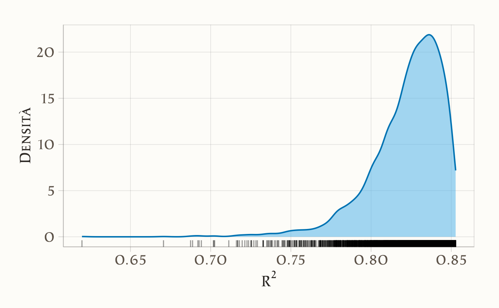
Calcoliamo anche i quantili:
In alternativa, con bayesplot possiamo ottenere una visualizzazione immediata e compatta:
mcmc_areas(r2_draws, prob = 0.95) 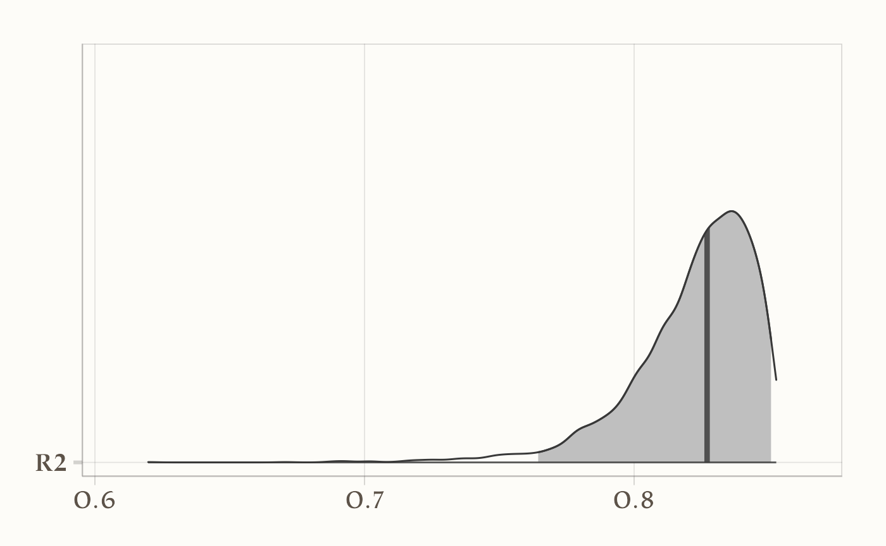
27.7.3.1 In sintesi
Il Bayes \(R^2\) è uno strumento potente perché combina l’intuitività del \(R^2\) classico con la ricchezza informativa dell’approccio bayesiano, permettendo di valutare non solo quanta varianza il modello spiega, ma anche quanto siamo sicuri di questa stima.
27.8 Approfondimento: manipolare la distribuzione a posteriori con brms
Vediamo ora come accedere e manipolare i campioni della distribuzione a posteriori generati da un modello stimato con brms.
Supponiamo di aver costruito un modello lineare semplice, in cui vogliamo predire l’estensione dei ghiacci (extent) a partire dall’anno centrato (year_c):
fit_2 <- brm(
bf(extent ~ 1 + year_c, center = FALSE),
prior = prior_gaussian,
data = df,
backend = "cmdstanr",
silent = 0
)27.8.1 Estrarre i campioni
Una volta stimato il modello, possiamo ottenere i campioni MCMC della distribuzione a posteriori con as_draws():
posterior_2 <- as_draws(fit_2)L’oggetto posterior_2 è di tipo draws, definito dal pacchetto posterior. Al suo interno troviamo i campioni prodotti dall’algoritmo MCMC, organizzati come un array o una lista:
str(posterior_2)
#> List of 4
#> $ 1:List of 5
#> ..$ b_Intercept: num [1:1000] 6.74 6.72 6.75 6.65 6.79 ...
#> ..$ b_year_c : num [1:1000] -0.075 -0.0721 -0.0757 -0.0717 -0.0745 ...
#> ..$ sigma : num [1:1000] 0.43 0.427 0.494 0.493 0.413 ...
#> ..$ lprior : num [1:1000] -3.05 -3.05 -3.06 -3.07 -3.04 ...
#> ..$ lp__ : num [1:1000] -31.1 -30.8 -31.8 -31.7 -31.9 ...
#> $ 2:List of 5
#> ..$ b_Intercept: num [1:1000] 6.75 6.75 6.69 6.73 6.53 ...
#> ..$ b_year_c : num [1:1000] -0.0714 -0.0711 -0.0695 -0.0789 -0.0687 ...
#> ..$ sigma : num [1:1000] 0.458 0.473 0.388 0.515 0.468 ...
#> ..$ lprior : num [1:1000] -3.05 -3.05 -3.04 -3.07 -3.07 ...
#> ..$ lp__ : num [1:1000] -31 -31.1 -31.6 -32.6 -34.3 ...
#> $ 3:List of 5
#> ..$ b_Intercept: num [1:1000] 6.65 6.83 6.65 6.76 6.63 ...
#> ..$ b_year_c : num [1:1000] -0.0703 -0.0642 -0.0752 -0.0688 -0.077 ...
#> ..$ sigma : num [1:1000] 0.399 0.424 0.428 0.403 0.41 ...
#> ..$ lprior : num [1:1000] -3.05 -3.04 -3.05 -3.04 -3.05 ...
#> ..$ lp__ : num [1:1000] -31.7 -33.8 -31.5 -31.5 -32.4 ...
#> $ 4:List of 5
#> ..$ b_Intercept: num [1:1000] 6.68 6.66 6.76 6.73 6.78 ...
#> ..$ b_year_c : num [1:1000] -0.0625 -0.0729 -0.0661 -0.0708 -0.0711 ...
#> ..$ sigma : num [1:1000] 0.44 0.423 0.465 0.451 0.414 ...
#> ..$ lprior : num [1:1000] -3.05 -3.05 -3.05 -3.05 -3.04 ...
#> ..$ lp__ : num [1:1000] -32.5 -31.2 -31.7 -30.8 -31.5 ...
#> - attr(*, "class")= chr [1:3] "draws_list" "draws" "list"27.8.2 Parametri del modello
Per vedere i nomi dei parametri campionati (intercetta, slope, deviazione standard, ecc.) usiamo:
variables(fit_2)
#> [1] "b_Intercept" "b_year_c" "sigma" "lprior" "lp__"Nel nostro caso, siamo interessati al coefficiente di regressione associato a year_c, che in brms è etichettato come b_year_c.
27.8.3 Estrarre e riorganizzare i campioni
Per lavorare più comodamente con i campioni, possiamo usare tidybayes, che fornisce funzioni per trasformare gli output bayesiani in formato tidy.
b_slope_draws <- posterior_2 |>
spread_draws(b_year_c)La funzione spread_draws() “srotola” i campioni in un tibble:
head(b_slope_draws)
#> # A tibble: 6 × 4
#> .chain .iteration .draw b_year_c
#> <int> <int> <int> <dbl>
#> 1 1 1 1 -0.0750
#> 2 1 2 2 -0.0721
#> 3 1 3 3 -0.0757
#> 4 1 4 4 -0.0717
#> 5 1 5 5 -0.0745
#> 6 1 6 6 -0.0682Ogni riga rappresenta un singolo campione della catena MCMC per quel parametro.
27.8.4 Calcolare statistiche di sintesi
Una volta estratti i campioni di b_year_c, possiamo calcolare facilmente mediana, media e quantili:
- I quantili a 0.03 e 0.97 definiscono un intervallo di credibilità al 94%.
- Il quantile a 0.50 corrisponde alla mediana a posteriori.
- La media a posteriori fornisce un’altra stima puntuale utile.
27.8.5 Visualizzare la distribuzione a posteriori
Per capire meglio la forma della distribuzione a posteriori, possiamo tracciarne la densità. Con tidyverse e tidybayes bastano poche righe:
tibble(beta = b_slope_draws$b_year_c) %>%
ggplot(aes(x = beta)) +
stat_halfeye() +
labs(
x = "Valore di β",
y = "Densità a posteriori"
)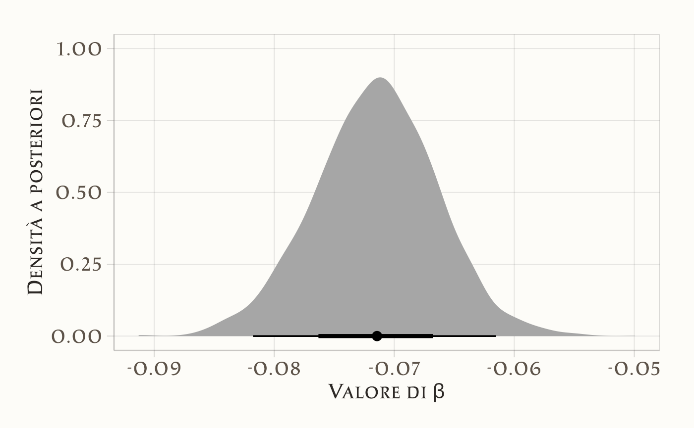
-
stat_halfeye()mostra la densità stimata e mette in evidenza i valori più probabili. - La banda orizzontale rappresenta un intervallo di credibilità centrale.
27.8.5.1 In sintesi
Grazie a as_draws() di posterior e alle funzioni di tidybayes, possiamo:
- estrarre i campioni MCMC della distribuzione a posteriori,
- calcolare statistiche di sintesi (media, mediana, quantili),
- visualizzare in modo intuitivo la forma e l’incertezza della distribuzione di un parametro.
La combinazione di posterior, tidybayes e tidyverse rende il flusso di lavoro con i modelli stimati da brms semplice, potente e flessibile.
Riflessioni conclusive
In questo capitolo abbiamo visto come la scrittura di un modello possa essere resa più chiara e compatta attraverso l’uso di scorciatoie sintattiche. Lo scopo non è cambiare la sostanza del modello, ma alleggerire la sua formulazione, così da concentrare l’attenzione sugli aspetti concettuali e interpretativi piuttosto che sui dettagli tecnici ripetitivi.
Questa operazione di “pulizia” del codice ha un valore didattico importante: permette di visualizzare con maggiore immediatezza la struttura del modello e di cogliere più facilmente il legame tra le formule statistiche e la loro implementazione. Inoltre, anticipa una sfida che incontreremo sempre più spesso man mano che i modelli diventeranno complessi: la necessità di strumenti che automatizzino i calcoli senza oscurare la logica sottostante.
Nei prossimi capitoli vedremo come Stan risponda a questa esigenza su scala molto più ampia, fornendo un linguaggio di programmazione che combina rigore statistico e potenza computazionale. In questo senso, lo “zucchero sintattico” non è solo una comodità, ma un passo preparatorio per abituarci a pensare ai modelli in modo modulare, leggibile e scalabile.
Bibliografia
Clayton, S. (2020). Climate anxiety: Psychological responses to climate change. Journal of anxiety disorders, 74, 102263.
Wilkinson, G., & Rogers, C. (1973). Symbolic description of factorial models for analysis of variance. Journal of the Royal Statistical Society Series C: Applied Statistics, 22(3), 392–399.